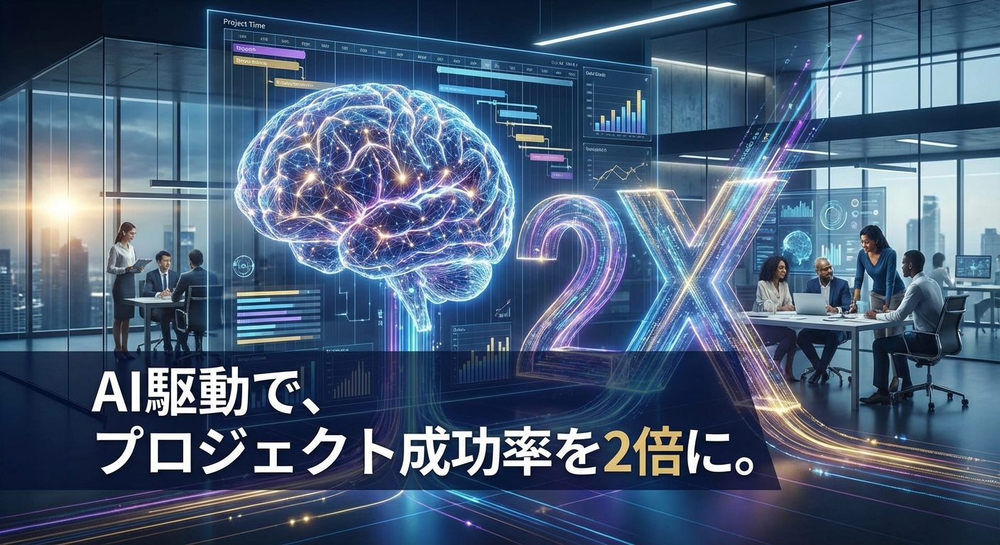
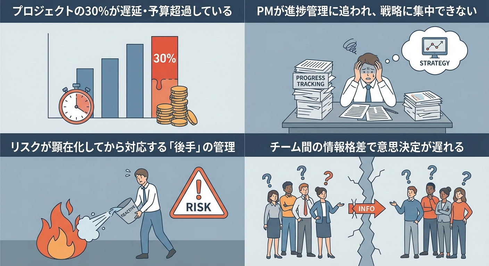
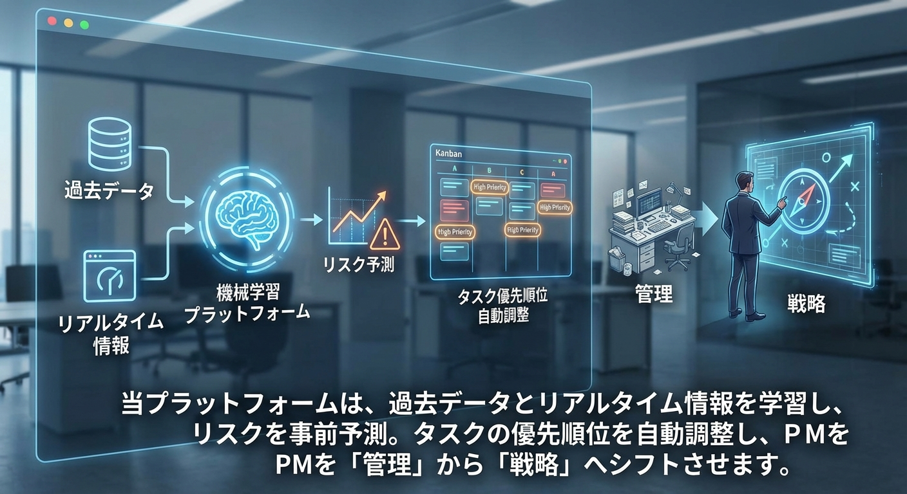
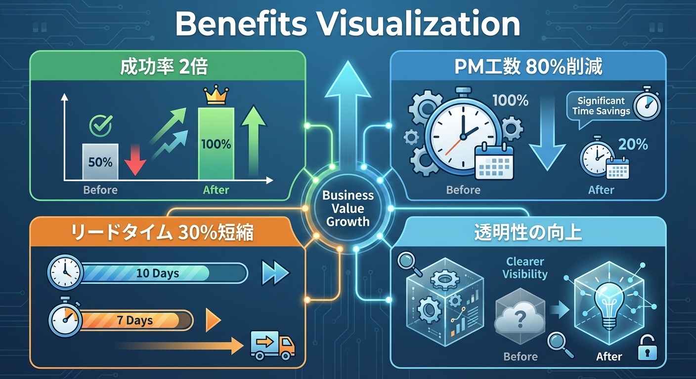
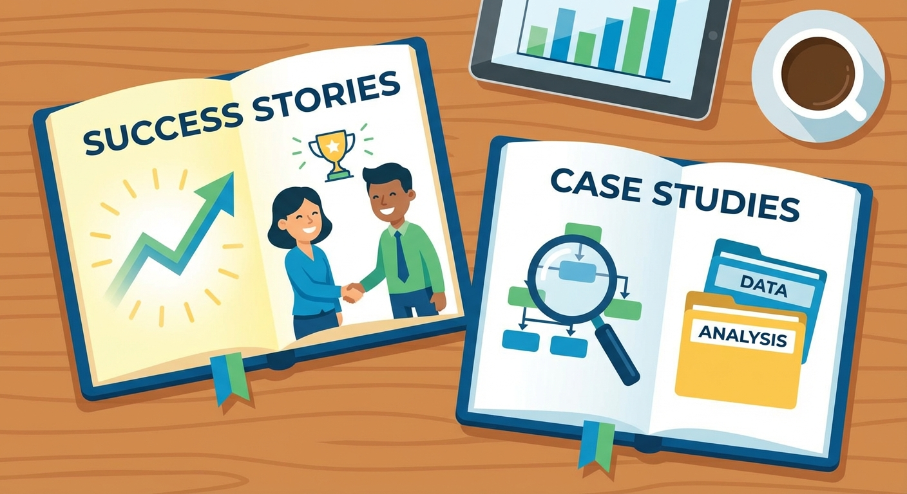
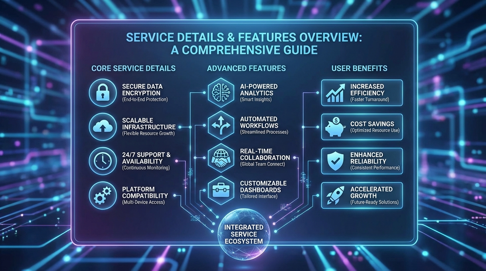
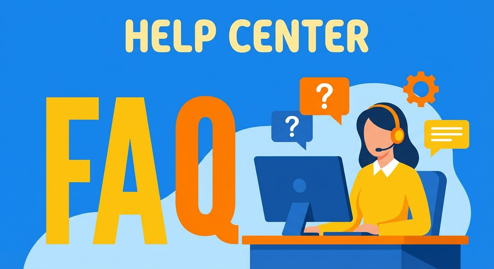

リスク予測・タスク最適化・進捗可視化を自動化。PMの負荷を80%削減し、チームを成果に集中させる次世代PMプラットフォーム

無料デモを見る多くの企業が、プロジェクトの遅延・コスト超過・品質問題に悩んでいます。従来のツールでは、予測不可能なリスクや複雑な依存関係に対応しきれません。

当プラットフォームは、過去データとリアルタイム情報を学習し、リスクを事前予測。タスクの優先順位を自動調整し、PMを「管理」から「戦略」へシフトさせます。

遅延・予算超過のリスクを最大2週間前に検知。予防的アクションを自動提案し、炎上を未然に防ぎます。
チームのスキル・稼働状況・依存関係を分析し、最適なタスク割り当てと優先順位を自動生成。リソース効率を最大30%向上。
プロジェクト全体の健全性を1画面で把握。ステークホルダーへの報告資料を自動生成し、報告作業を90%削減。
AIによる自動化と最適化で、プロジェクトの質・スピード・予測可能性が劇的に向上します。

リスク予測と自動最適化により、期限内・予算内でのプロジェクト完了率が2倍に向上
進捗管理・報告・調整業務を自動化し、PMは戦略立案と意思決定に集中
タスク最適化とボトルネック自動検知により、プロジェクト全体のリードタイムを短縮
全ステークホルダーがリアルタイムで進捗・リスクを把握。意思決定の速度が3倍に
業界を問わず、プロジェクトマネジメントの質を飛躍的に向上させています。

20案件同時進行でプロジェクト遅延率を50%削減。PMの残業時間が月40時間減少
新製品開発プロジェクトのリードタイムを35%短縮。予算超過ゼロを達成
クライアント案件の可視化により、顧客満足度が20ポイント向上
プロジェクト規模・業種に応じた柔軟なプラン


はい。Jira、Asana、Trello、Microsoft Projectなど主要ツールとAPI連携が可能です。既存データを移行する必要はありません。
導入初期で約70%、3ヶ月の学習期間を経て85%以上の精度を達成しています。プロジェクトデータが蓄積されるほど精度が向上します。
標準的なケースで、デモ〜トライアル開始まで2週間、本格運用まで1.5ヶ月です。専任のカスタマーサクセスチームがサポートします。
ISO27001認証取得済み。データは全て暗号化され、オンプレミス展開にも対応しています。
はい。5名〜のスタートアッププランもご用意しています。まずは1プロジェクトからお試しいただけます。